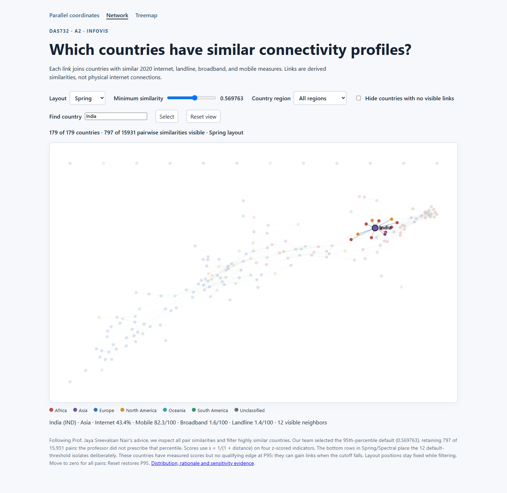
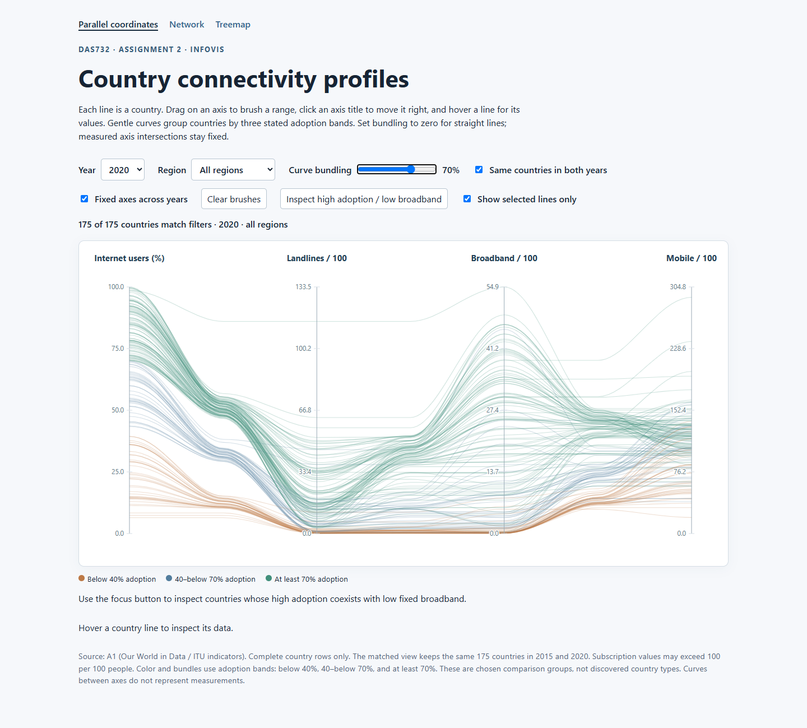
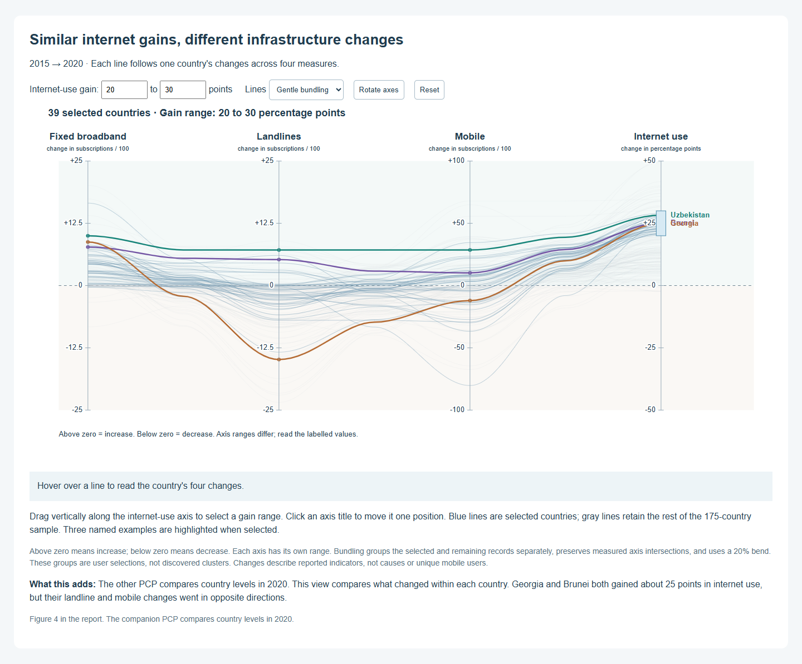
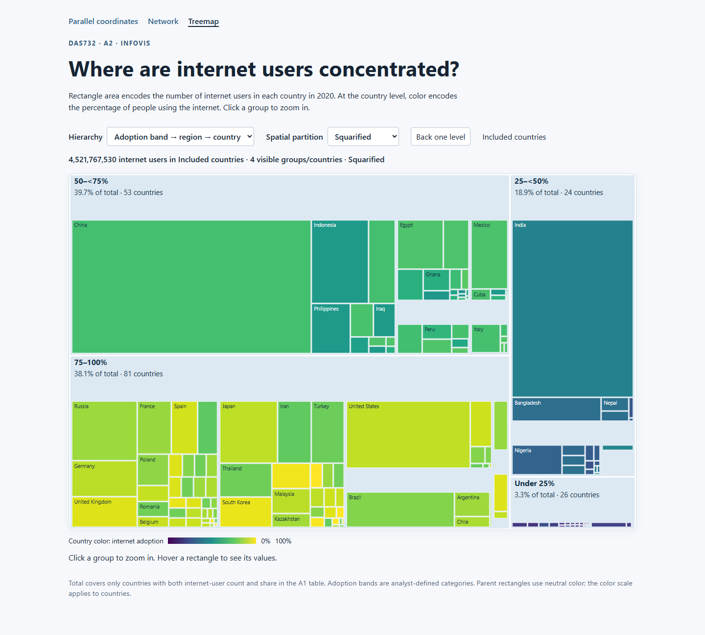
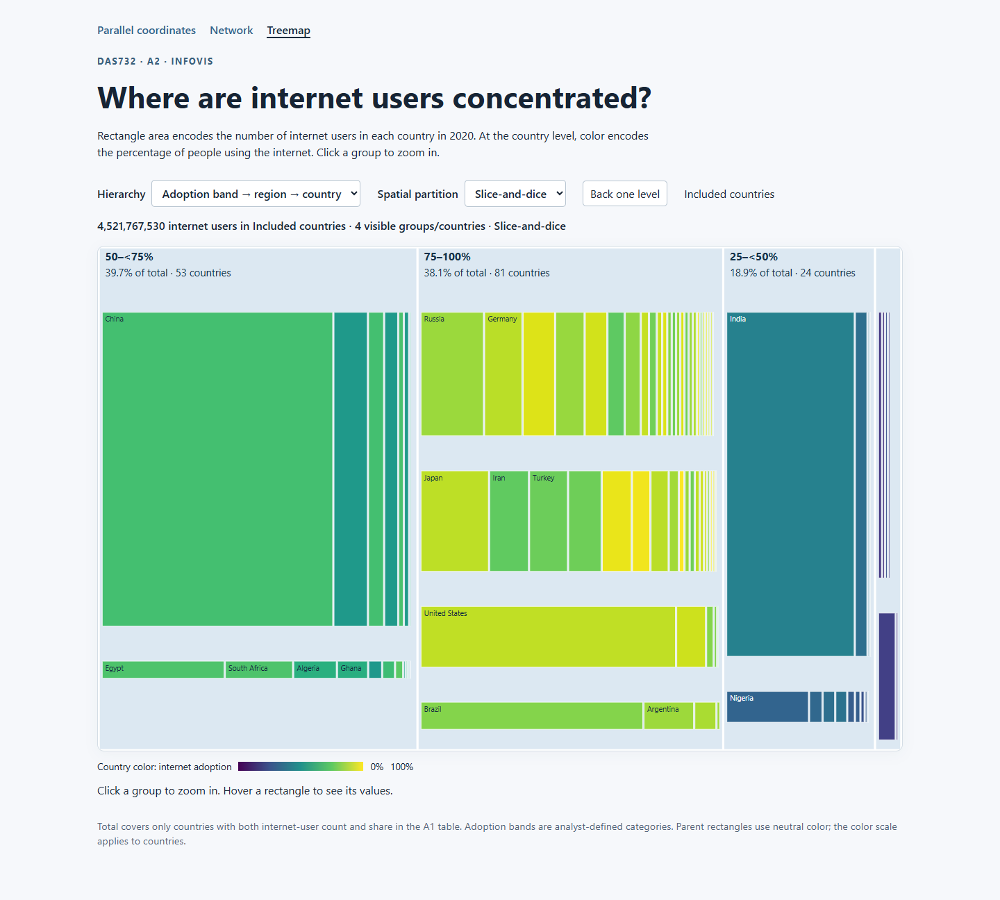

Network: layout, threshold, country search and node filters

Uncropped full-page screenshots captured from the working dashboards. Controls were exercised in a headless browser. Chart exports in the PDF are linked here so the complete controls remain reviewable.




